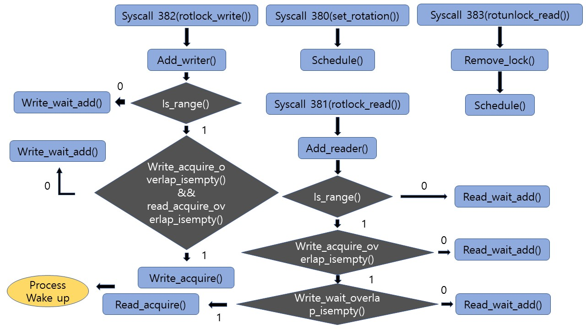
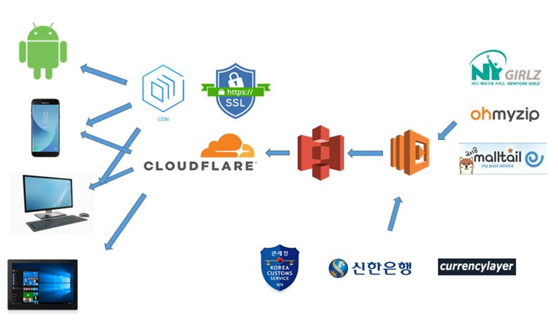
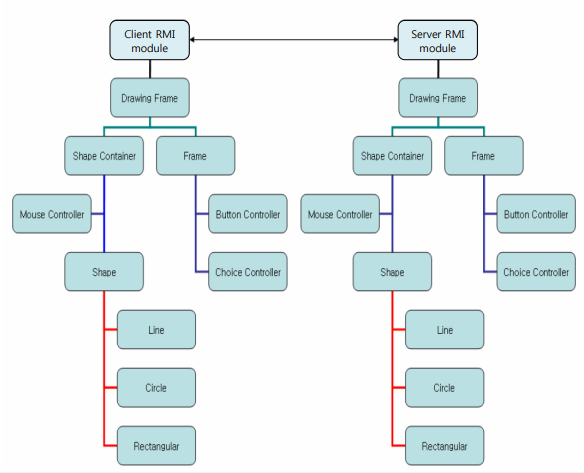

- December 1, 2018 - Received a full score on TOEIC(990/990) and a top level on the OPIc(AL) test.
- June 21, 2018 - I will start a software internship at Lineplus Corp. from Jul 02, 2018.
Software developer
okjinhyuk@snu.ac.kr, [resume(old)]
Seoul National University, Seoul, Korea (Aug. 2019 ~ Mar. 2011)
Seoul National University, Seoul, Korea (Aug. 2019 ~ Mar. 2011)
Seoul, Korea (Feb. 2011 ~ Mar. 2009)
Physics division, Seoul, Korea (Jan. 2009 ~ Mar. 2007)
Web service, Founder (Feb. 2019 ~ Jan. 2017)
Art firm, Programmer (Dec. 2016 ~ May. 2016)
Military Armistice Commission, Operations Sergeant (Sep. 2015 ~ Dec. 2013)
Seoul National University
Jun. 2017 ~ Mar 2017

We used Samsung Artik 10 devices with TizenOS(Linux kernel 3.4). We modified the Linux kernel source code directly to implement additional system call ptree(380) to monitor current processes and hiearchical relationships of them. We also added 5 additional system calls to develop a new orientation based reader/writer lock given azimuth constraints of a physical mobile device using kernel semaphores and mutex locks. Then we implemented a new run queue in the kernel scheduler with a round robin algorithm with load balancing. For last, we modified the ext2 inode to attach GPS geolocation tags and granted accessibility only from the authorized locations. These were a series of cooperative team projects from the Operating Systems course of SNU(credits to team 27 and the hard worked instructors).
[Project 1 Working Example]
[Project 2 Working Example]
Jikguprice
Current ~ Jan. 2017

I founded Jikguprice to eliminate the pain of searching and calculating frequently changing customs laws, currency rates, foreign card fees and delivery agencies' fees. For an average customer to calculate an exact price from dollar notated amazon prices, one would need at least dozen searches on rates then calculate seven different formulas. Jikguprice auto updates these informations and formulas to give a clear calculation of total expenses with minimum information conveniently. We used several new technical paradigms on developing Jikguprice such as serverless architectures, backend computer vision for information retreival, and SPA MVVM frontend frameworks(credits to Jikguprice team). The technical challenges were organized as my bachelor's thesis(advisor U Kang).
[Website]
Seoul National University
Jun. 2016 ~ May 2016
 This assignment was submitted as a project from the Computer Programing course of SNU. The program consists of the server and client software; they are connected via Java RMI calls. The server collects and synchronizes the inputs from client nodes on the GUI Whiteboard to collect and transmit changes to client nodes(credits to DCSLAB).
Seoul National University
Jun. 2013 ~ Mar 2013
We were asked to make an autonomous robot to swing itself while hanged on a single rope. The robot should make its own swinging movements without any contact else than the rope attached. Our robot consisted of 8 DOF motor joints similar to a double pendulum. We modeled and simulated it's behaviours with forward and inverse kinematics, and then calibrated it with intensive actual tests. The robot was designed with Solidworks and we manufactured from basic materials such as PVC and aluminium. Stress test was done while the design process. Our robot won 1st of 14 teams(Grand prize) in the final contest. I was in charge of the computer simulations(dynamic modeling with physics) and controller design. This project was assigned from the Design and Manufacturing course of SNU(credits to the eight members of Team TEC-100 and the hard worked instructors).
[In honor of Professor Jongwon Kim]
Seonun elementary school, Kwangju, Korea
Dec. 2017
I was honored to be invited by Seonun elementary school teachers. I held two hour lectures about myself, current technologies and challenges to 6th grade students of the school.
[Image]